Why Ropes Twist
Climbing ropes sometimes twist and tangle, but how and when exactly this happens is not well understood in the climbing community. Which belay devices, anchor configurations, or coiling methods cause the twist? Does it depend on friction, climber weight or lowering speed? What even is rope twist? This article explores the physics of rope twisting to answer these questions.

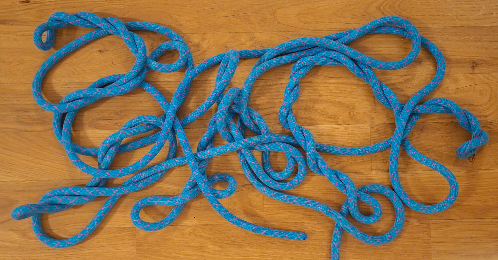
1 Theory
A rope can rotate in two ways about its own axis. It can spin: turn as a whole, like an axle. Or it can be twisted along its length, like a wrung towel; the technical term for this is torsion. Torsion accumulates when one end of the rope is held still and the other end spins.
Twisted ropes are, simply put, ropes with some accumulated torsion along their length. When the torsion gets high enough, the rope buckles into loops and eventually tangles (see Figure 2).

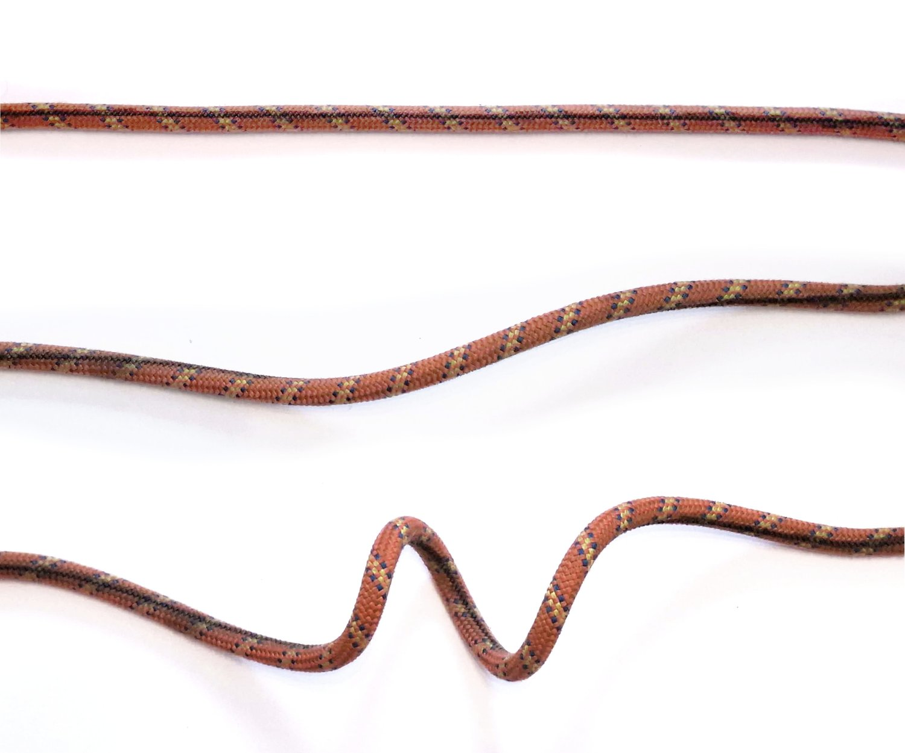
Due to the structure of the climbing rope sheath, ropes bend easily but are very resistant to torsion. Because of this, when running around obstacles, ropes will bend, but will remain mostly untwisted – torsion will be close to zero. It turns out, rather surprisingly, that this tendency to remain untwisted when following curved paths is what makes the rope spin, and as a result, ultimately, become twisted and tangled.
In order to quantify this effect, we need to understand the details of how ropes behave when running around obstacles.
1.1 Simple case
We can model rope as a curve running through space. When the curve is planar, the rope bends in an obvious fashion, and no twist is induced. This is the case for a straight rope, but also rope running over a pulley, through a tube-style device, or through some simple anchor configurations.
The simplest case that does induce twist is a rope wrapped around a bar at an angle, forming a helix (Figure 3). Running the rope along such a path forces the rope to spin about its own axis at the rate of radians per second:
Mathematical derivation
The mathematical model comes from Kirchhoff's rod theory. Following this article, rope twist changes over its arc-length as follows (Equation (54.1)):
where
- is the rope's angle of twist with respect to its Frenet frame,
- is position along the rope's path,
- is rope torsion,
- is the geometric torsion of the helix formed by the rope's centerline.
When the rope slides around the bar, we want to measure whether it rotates over time, expressed as . A bent rope resists turning about its own axis, so as the rope slides, each piece of it preserves its angle to the bar. In a short time , a piece of rope moves along the bar by , where is the velocity of the rope, and its angle stays constant:
Therefore:
Substituting (1), we get the rotation rate:
For simplicity, we assume that the rope has no torsion (). After labeling the rotation rate and expanding (Equation (31) from the article):
we finally get the equation below.
where
- is the rotation rate of the rope about its axis (in radians per second),
- is the rope's velocity,
- is the wrap angle,
- is the radius of the bar,
- is the radius of the rope.

This result implies that a rope naturally spins when it travels along a helical path. Note that the spin is not caused by friction, but simply by the rope's trajectory. Even with zero friction, the rope would still spin.
Some additional notes on this result:
- Spin rate is independent of the number of turns around the bar.
- Spin rate is zero when the rope is wrapped around the bar at a right angle.
- Spin rate is highest for a rope running at 45° to the bar.
- Spin rate is higher for smaller bend radii.
- Rope tension does not play a role.
You can play with some of the parameters affecting spin rate in Figure 4.
As we will see later on, the applicability of this idealized result is somewhat limited. For low rope tensions and short helical paths, the spin rate may be lower than predicted by this formula (see Section 1.3).
Spin direction
The rope spins around its axis in the same direction it wraps around the bar. We can introduce a left/right-hand rule as a mnemonic for the spin direction. If you grab the bar with your thumb pointing in the direction of rope travel, your fingers will curl in the direction of the rope's spin.
If the left hand fits the rule, we will call the spin left-handed. If the right hand fits the rule, we will call the spin right-handed. Figure 4 above shows a left-handed spin.
1.2 Complex configurations
The simple helical model above is sufficient to approximate some simple real-world examples, like a rope running over a single carabiner at an angle. More complex systems, like the Munter hitch or a two-point anchor, can be described by decomposing these systems into multiple helical sections. To find out how such a system behaves as a whole, we need to understand how multiple helical sections along the rope path interact.
As we saw, a helix imparts a spin rate to the rope. When multiple helical sections are placed along the rope's path and their spin rates are the same, the whole system spins at that same rate.
But what if the spin rates are different? A rope running through a system of obstacles can only spin at one rate, because otherwise, torsion between the obstacles would accumulate without limit. The solution lies in the fact that torsion counteracts spin. If the spin rates of two obstacles differ, torsion accumulates between them up to the level that makes their spin rates equal.
Mathematical derivation
Consider a two-helix configuration. Let and be the geometric torsions of the two helices, and , be rope torsions at those helices. In a steady state, the rope spin and velocity must be equal for both helices, so from Equation (5):
If we assume a free-spinning rope, then torsion before the first helix is zero. Because the rope preserves its angle around bars, as was discussed in the derivation of Equation (2), torsion around the first helix is also zero, . Therefore,
which is non-zero whenever the spin rates of the two helices are different. Thus, the second helix accumulates enough rope torsion to counteract the difference between its spin rate and that of the first helix.
The same reasoning applies to any number of sections in a row.
As a general rule, the first obstacle sets how fast the rope spins. Every other obstacle only stores torsion between the obstacles, without affecting the overall spin rate. This effect is illustrated in Figure 5. This rather surprising result has implications for climbing anchors and belay devices, which are explored in Section 2.
1.3 Rope dynamics
The idealized model above has one big limitation. It assumes that the rope never rotates relative to its bend (Equation (3)), and everything that follows rests on this assumption. However, a real climbing rope's resistance to bent rotation (Figure 6) is not absolute: if the torsion is high enough, the rope can rotate relative to its bend.
Resistance to bent rotation is caused by friction inside the rope, which, like static friction, holds completely up to a limit. If the torsion difference over a helix stays within that limit, the rope does not rotate relative to its bend at all, and the idealized model from Section 1.2 holds exactly. Only past the limit does the rope slip, and the idealized model is no longer valid.
Mathematical derivation
Let be the bent rotation rate: how fast a piece of rope turns relative to its bend as it travels along its path. The idealized model assumes , which gives Equation (5).
Two torques act on the rope about its own axis. The first is the twisting moment carried along the rope. It is elastic, and proportional to rope torsion:
where is the rope's torsional stiffness.
The second torque resists bent rotation. We model it as friction: a torque per unit length of rope, , independent of the rotation rate:
where is the largest torque the friction can exert. The first row is dynamic friction, the second row is static friction.
Presumably, grows with rope curvature , and with rope tension :
Without precise measurements, we can only guess at the exact formula. Something like this is plausible:
The first term is friction inside the bent rope: turning a bent rope about its own axis takes each fiber from the outside of the bend to the inside and back, and the strands rub against each other as they do. The second term comes from the load pressing the rope against the bar, per unit length. The load flattens the rope's cross-section, and axial rotation rolls the rope's material through the flattened shape, losing energy. It also tightens the sheath braid around the core, pressing the strands together harder. and are scaling factors.
On a helix, the curvature is
Neglecting rotational inertia, the torques on every piece of rope balance. For a rope that bends equally easily in every direction, bending moments do not contribute to the balance about the rope's axis, which leaves
So torsion can change along the rope only where the rope is bent. On straight sections, and torsion is constant, or zero if the end of the rope is free to rotate.
Around a helix, following a piece of rope, as in Equation (2), and substituting (1), its bent rotation rate is
In steady state, torsion does not change over time, so is the same everywhere along the rope, and:
As per Equation (11), this equation can be split into two regimes:
1. Static regime, internal rope friction holds (). No rotational slip occurs, and torsion is constant as the rope travels along the helix.
2. Slip regime, internal rope friction is overcome (). Here, friction exerts all of , so by (15), torsion changes at exactly the rate , and by differentiating (17) and substituting:
Thus, is increasing linearly in the direction of rope travel.
Putting this all together, knowing that is continuous, the overall picture is this. Let's say the torsion entering the helical section is smaller than the torsion leaving it. The rope maintains its incoming torsion as it travels over the helix at first, being in the static regime. At some point, the twisting moment overcomes rotational friction, the rope starts rotating (slip regime), and torsion starts increasing linearly. As the rope leaves the helix, the torsion is equal to the outgoing torsion – much like a belt creeping over a pulley.
If the difference between the torsions is very large, the rope may be in the slip regime along the whole path, which would lead to some of the torsion being relieved by "escaping" over the helix to the other side. This effectively limits the torsion difference a helix is able to hold to a maximum value, which is determined by the properties of the rope and the bar.
From Equation (18), we can calculate the maximum torsion difference a helix is able to hold, , assuming for simplicity that tension is constant:
Substituting from the equation for the angle traversed by the helical path :
Substituting the guess from (13) and simplifying using (14):
If every bar has torsion difference within the limit, the rope follows the idealized model from Section 1.2. Otherwise, the rope "slips", its twisting action is limited, and torsion difference is kept at the maximum value .
When the rope starts slipping, this has the effect of relieving the torsion difference over the helix. This, ultimately, limits the total spin rate induced by the helical section. It also causes some of the torsion present past the helix to leak through backwards (Figure 7), which means that the first bend along the rope path is not the only one influencing total rope twist. The following bend(s) now also play a role, albeit typically to a lesser extent.
1.4 Rope buckling
The last factor influencing rope twist is rope buckling. So far, we have assumed that the rope runs along a fixed trajectory, which runs straight between obstacles, and tightly wraps around obstacles. However, when enough torsion accumulates, the rope will bend in a way that relieves some of the accumulated torsion. This will, in turn, prevent the rope from twisting further.
This effect is strongly dependent on rope tension. If tension is very low, the rope is free to find a shape that eliminates torsion accumulation. If tension is very high, the rope is forced to follow the straightest path, and if that path is helical, torsion will start accumulating.
The practical upshot is that loosely handled ropes will twist much less than tightly held ropes. Belaying with a Munter hitch, for example, should be done by feeding the rope through the hitch, rather than pulling it by force.
2 Applications
For readers who skipped Section 1, here is a summary of the main points, as they apply to the practical applications below:
- Climbing ropes naturally spin when running around obstacles at an oblique angle. This spin is what causes ropes to twist and tangle.
- The simplest case is rope running around a bar along a spiral path. Real rope paths can be decomposed into a series of such spiral segments.
- Obstacles placed at an angle of to the rope cause the maximum amount of rope twist. Twist is larger for smaller bend radii .
- The amount of twist depends on rope tension. With more tension, ropes will tend to spin more.
- When the rope runs around multiple obstacles, the first obstacle (i.e., where the rope goes in) will determine the amount of spin; other obstacles don't have much effect.
Based on this understanding, we can analyze how the rope gets twisted in practice, and learn how to minimize or eliminate it. The following sections discuss the main causes of rope twist, and how to undo it.
2.1 Belaying and rappelling
2.1.1 Tube-style devices
In tube-style devices, all bends inside the device are in one plane. Therefore, in Equation (6), and the rope does not twist.

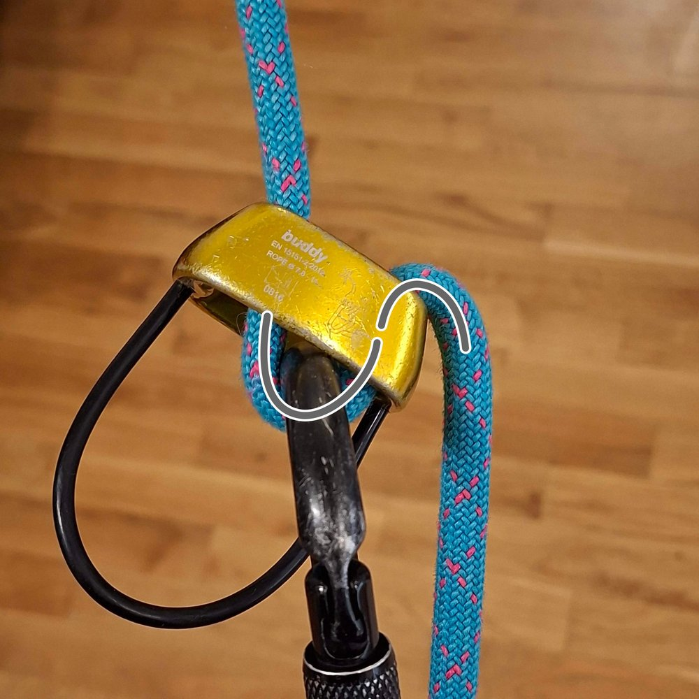
2.1.2 Figure-8 belay device
A figure-8 can be held in two ways. One way (Figure 9, A) contains two helices – one left-handed, and the other one right-handed. But, as we saw before, they don't cancel each other out: the first twist is the only one that matters. Thus, the proper way of holding the brake side is down (Figure 9, B). This basically eliminates the incoming spiral, and replaces it with an wrap that does not twist the rope.

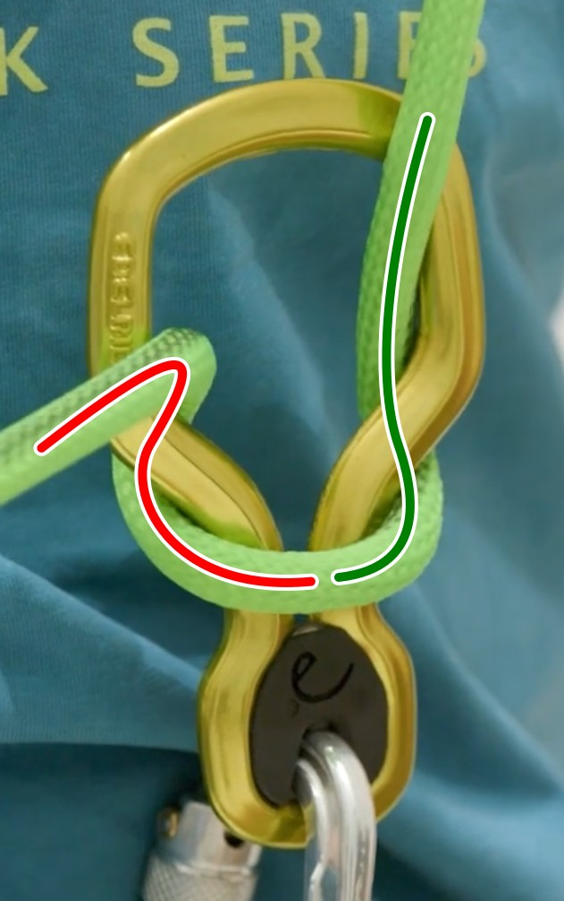
A. Twists rope.

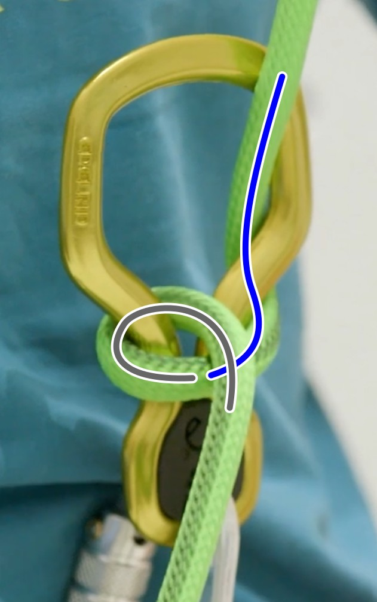
B. Doesn't twist rope.
Images: EDELRID Knowledge Base YouTube
2.1.3 Grigri
A Grigri can twist a rope, because the rope runs over the lip at an angle, but the effect is typically limited, and dependent on how the rope is handled. Normally, the brake side of the rope is held very loose with a Grigri, so the rope can align itself over the lip to minimize the twist (Figure 10).
People used to belaying with tube-style devices may hold more tension on the brake side, which can interfere with the rope's self-alignment and cause some rope twist.

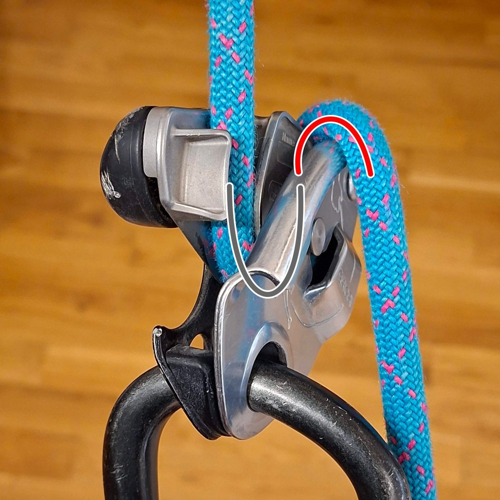
A. Left-handed spin.

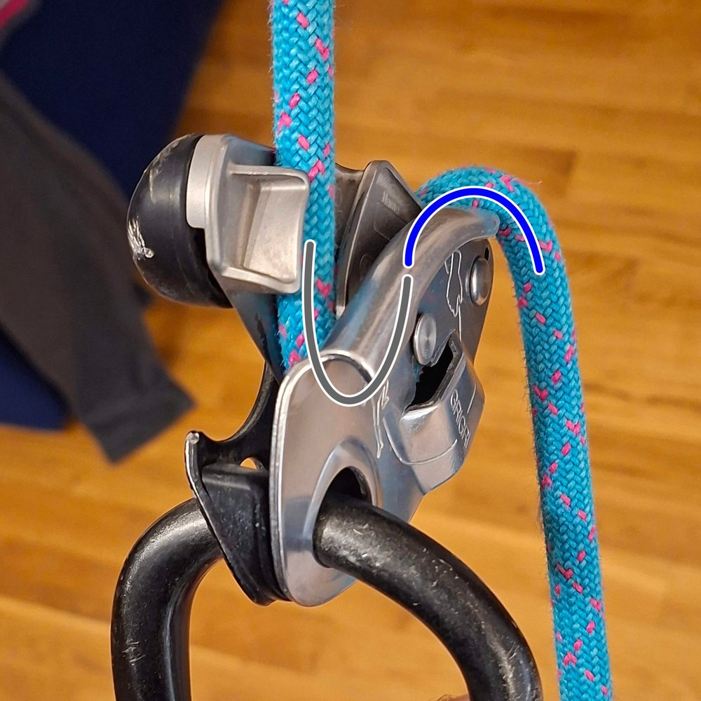
B. Right-handed spin.
2.1.4 Munter hitch
The Munter hitch is notorious for twisting the rope. From the theory, we know that the first bend in the direction of rope travel causes most of the twist. Therefore, when belaying a lead climber, lowering or rappelling, everything depends on how the brake side of the rope is handled. If the rope is held in a way that forms a pronounced helix, the rope will twist. Otherwise, it will not. Figure 11 shows the results of my experiments.

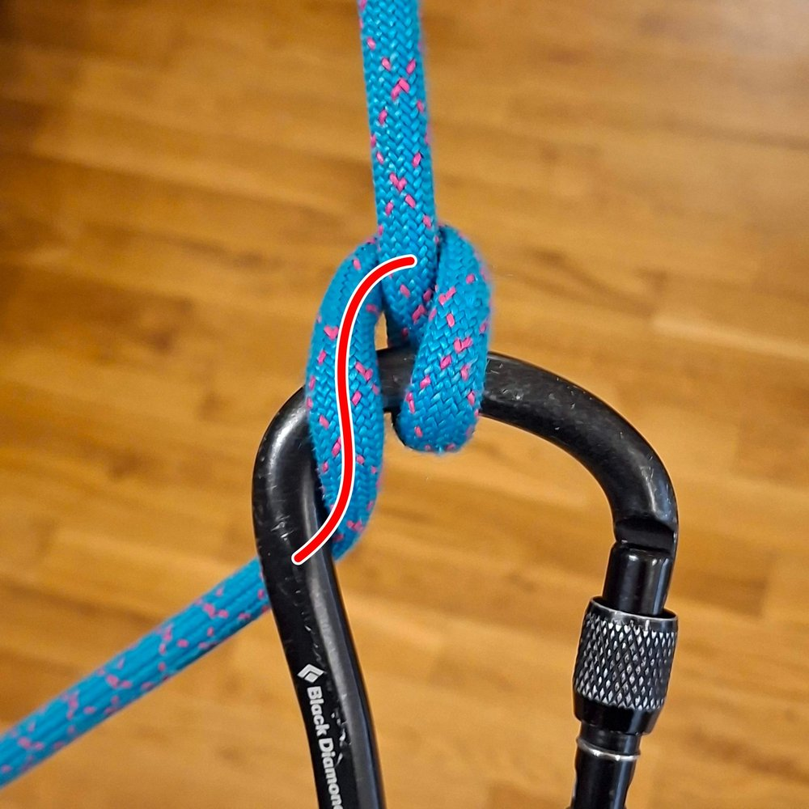
A. Lots of twist, avoid.

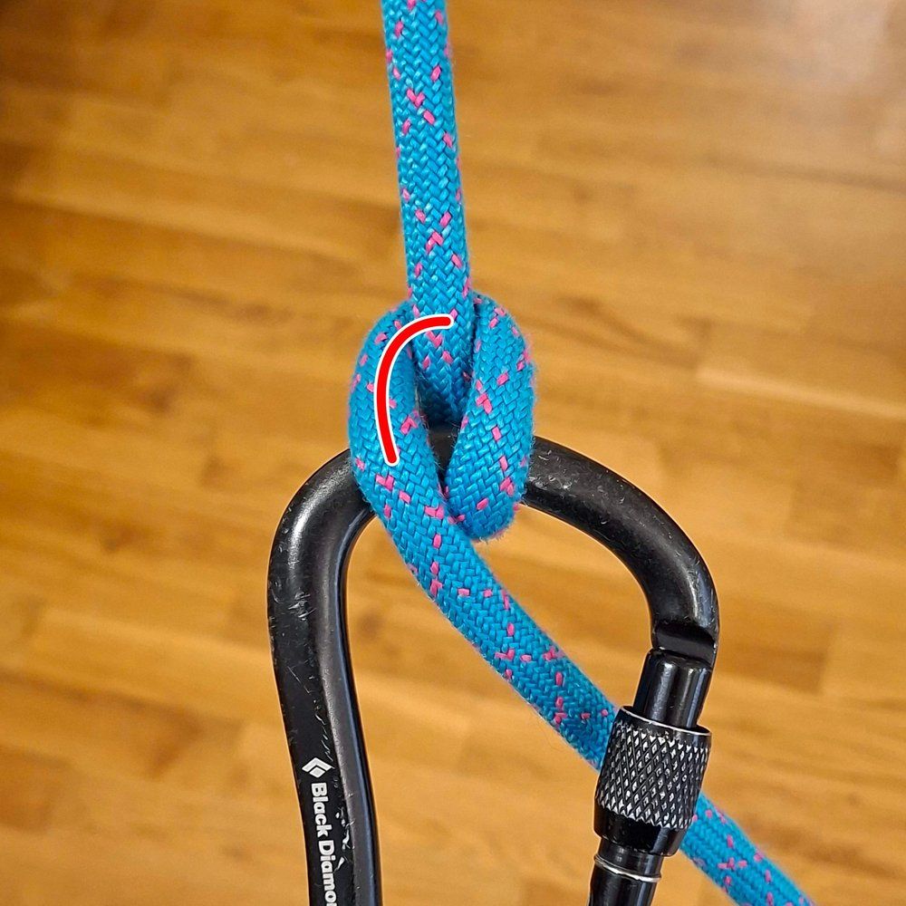
B. Some twist, good enough for belaying.

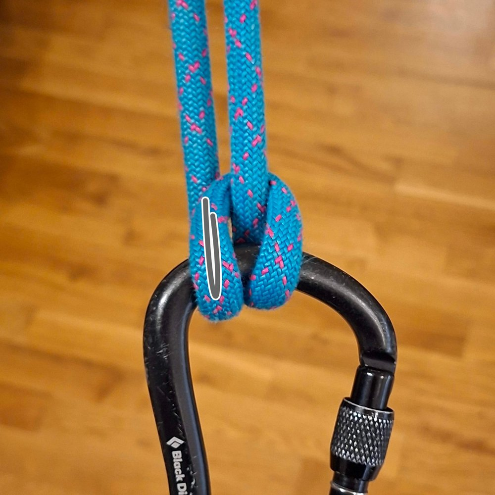
C. No twist, but impractical.

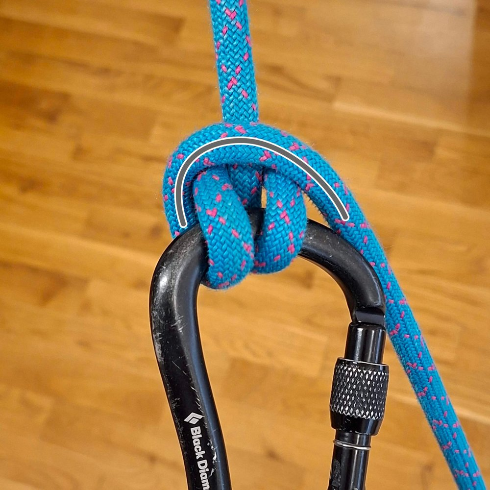
D. No twist, good for rappelling and lowering.
When belaying with a Munter hitch, we can further limit the twist by handling the rope very loosely – feeding the rope into the knot before pulling it out. That way, the whole knot is bigger, and the bends inside the knot have a larger radius . Also, the rope can move around to minimize the twist, as discussed in Section 1.4.
When lowering with a Munter, the tension in the rope is much higher than when belaying, and it is no longer possible to handle the brake strand loosely. For these cases, it is necessary to use one of the no-twist methods (Figure 11, C or D). Alternatively, use the Super Munter hitch, which avoids rope twist in the same way as the D method.
Rappelling with a Munter works in much the same way as lowering; the only difference is the doubled ropes (Figure 12).

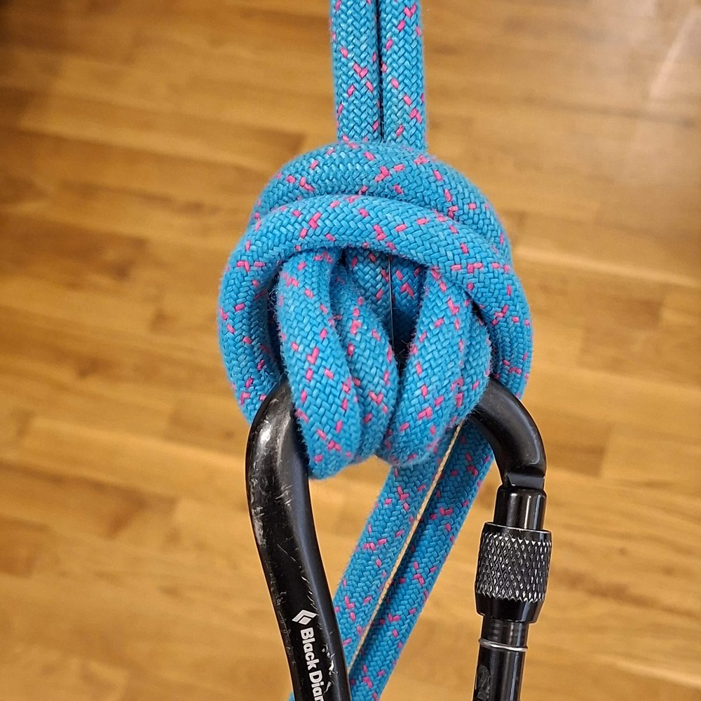
2.2 Lowering through anchors
Lowering through two rings placed side by side is known to sometimes twist ropes. The main problem with this setup is not the doubled anchor itself, but the fact that it may force the rope to run through the rings at an oblique angle. This does not really happen with one ring, or two rings that are touching each other, as the rope will naturally align to be perpendicular to the ring(s) in this case.
Experience shows that it's better to place the rings mirrored, rather than facing the same side (Figure 13, A). But as we discussed in Section 1.2, neither of these configurations will completely eliminate rope twist. The two twists do not cancel each other out even if they are opposite; the first ring along the rope path will deposit its twist, and the second ring will have only a limited influence.
To fully eliminate rope twist, both rings should be free to move and align themselves (Figure 13, B and C), or be fixed perpendicular to the rope (Figure 13, D).

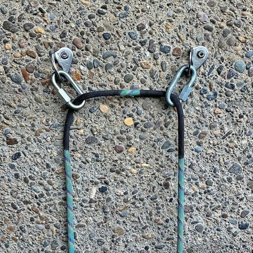
A. Rope twists.

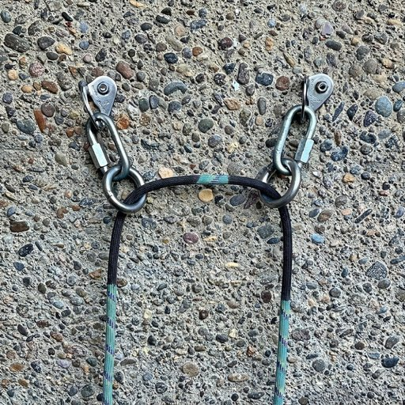
B. No twist.

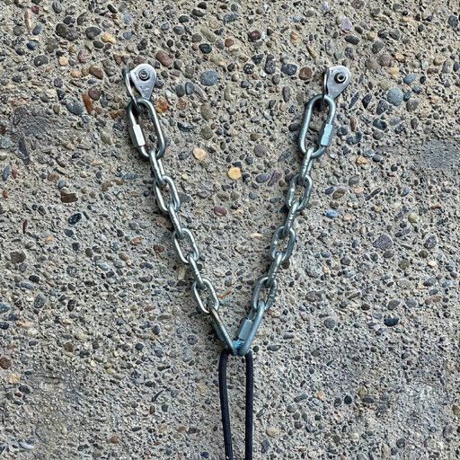
C. No twist.

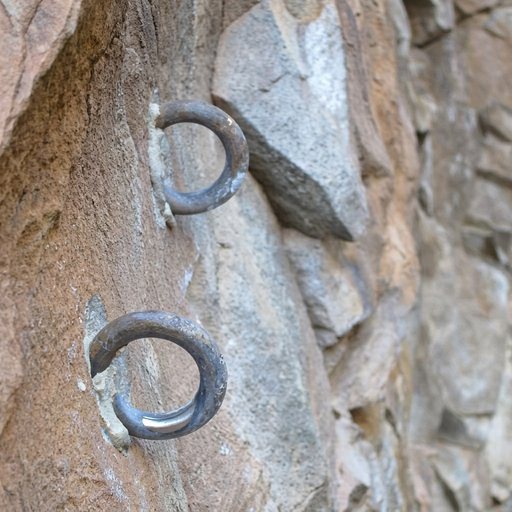
D. No twist.
Images: Alpine Savvy, Upskill Climbing.
Some online sources claim different twisting results from mine, including Alpine Savvy and Upskill Climbing. My claims come mainly from theory, and I haven't performed the necessary experiments to verify them. I welcome any corrections.
2.3 Rope coiling
Rope coiling is not directly related to rope running over obstacles, so the theory from this article does not apply. However, because it is a major cause of rope twist, it needs to be discussed here.
Contrary to popular belief, coiling and uncoiling rope in a circular coil (also known as the Alpine coil) does not twist the rope. Or, more precisely, coiling it correctly does not. If you coil the rope circularly, you need to ensure that each coil contains a single rope twist. That happens naturally when coiling, and it can be identified by the rope forming figure-8-like loops, not circular loops (Figure 14, B). If this is ensured, the rope does not need to be flaked, and it doesn't tangle, because every twist is undone when pulling the rope out of the coil.

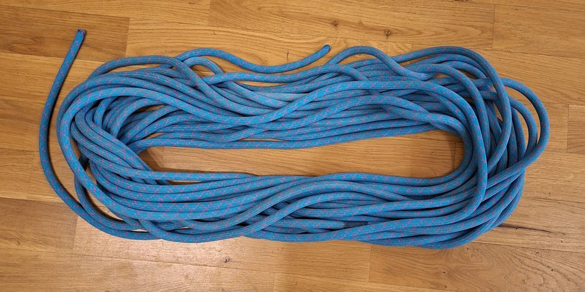
A. Incorrectly coiled rope.

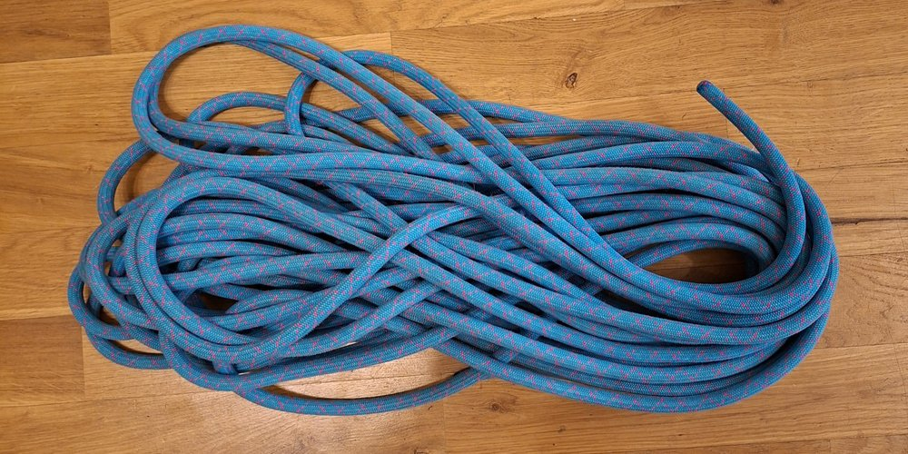
B. Correctly coiled rope.
If you try to make the coil circular, like a coiled garden hose (Figure 14, A), you will see that you need to twist the rope manually as you go. If you then don't undo those twists in the same way, the rope will get twisted as it is pulled out. This is sometimes a problem with brand-new ropes, which may be packaged in this kind of circular coil. How to uncoil these properly is nicely illustrated in the Black Diamond's QC Lab article.
In my opinion, the circular coil is slightly better than the commonly used butterfly method. With it, perhaps because of how the loops are twisted, the loops are less likely to tangle together. With some care, it is easier to pull the rope out of a backpack, and directly use it without flaking it first.
2.4 Untwisting a rope
These are my recommendations for untwisting a rope:
- Flake the rope, watch how it twists (i.e., watch its torsion), and manually undo it so that the sheath is straight again. This is the obvious option, and the one I used to untwist my ropes after all the experiments performed for this article. It works well.
- Hang the rope freely, whole or in segments. This should remove most torsion, because ropes naturally minimize torsion. People report that this works, but you need to have a cliff.
- Run the rope through a tube-style device, or a Grigri. Keep the brake side loose, so the rope can find the path minimizing torsion. People report that this works to an extent, but it may need to be repeated several times.
3 Prior Art
Edelrid's Knowledge Base has a great article on rope twisting: How Do Twists Form in Ropes, with a related YouTube video. I took a lot of inspiration from these, and they helped me develop my model. Go watch the video; it is a great illustration of rope twists in action. Edelrid correctly identifies the scenarios in which rope spins, and that the spin is the cause of rope twist. However, they make the mistake of assuming that the cause of the spin is asymmetric friction acting on the rope.
Another mistake Edelrid makes is in the section on rope coiling. They discard circular coiling as a whole, without considering the twist-free coiling method shown in Figure 14, B.
I am also not persuaded by the article's claim that rope twist can become permanently embedded in the rope through the sheath rotating against the core. I think a more plausible explanation for permanently twisted ropes is that a permanent spiral flattening develops along the rope. But that is just my guess. I don't have enough experience to judge one way or another.
Black Diamond's QC Lab article on twisty ropes is a great resource on rope coiling. It also analyzes anchor configurations, but their analysis is flawed. They misidentify doubled anchors and tight radii on their own as the causes of rope twist.
The Alpine Savvy blog post on anchor-induced rope twisting is wrong, in my opinion, about which anchors cause rope twist and why. I try to correct these mistakes in Section 2.2, but I didn't actually test the anchors experimentally to verify that I am right.
Hard Is Easy has a video that touches on rope twist. It very nicely illustrates rope twist in action. My only complaint is the ribbon explanation, which probably originates in the Black Diamond QC Lab article above, but I don't think it's actually a thing.
4 Conclusion
This article presents a model of rope twist as a phenomenon caused by the rope's trajectory. Using this model, we can analyze rope twist much more precisely than before. We can identify the exact scenarios in which rope twist occurs, and learn how to avoid them without discarding some useful rope handling techniques.
With this understanding, we can use doubled anchors, the figure-8, the Munter hitch and the Alpine coil correctly, without the rope twisting on us.
If you have any feedback, questions or insights, please feel free to contact me at pavel.potocek+twist@gmail.com.
I used Claude AI for the code and simulations. Text and analysis are mine.